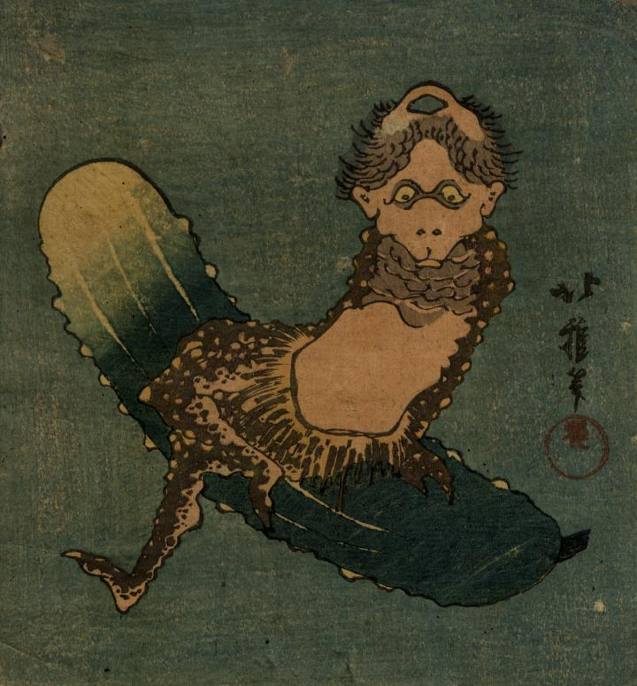

きゅうりに腰掛けた河童。全身が茶色で、頭頂には青い皿が見える。腹以外の皮膚にはコブ状の突起がある。腰蓑を身に付けており、手足には鋭い爪が生えている。
著作者：北雅／出典：親書誌：U426_nichibunken_0279：[河童と胡瓜]；カッパ ト キュウリ／日付：2014／資源識別子：U426_nichibunken_0279_0001_0000
Copyright (c)2010- International Research Center for Japanese Studies, Kyoto, Japan. All rights reserved.